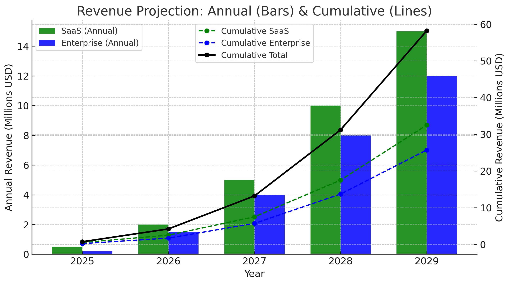
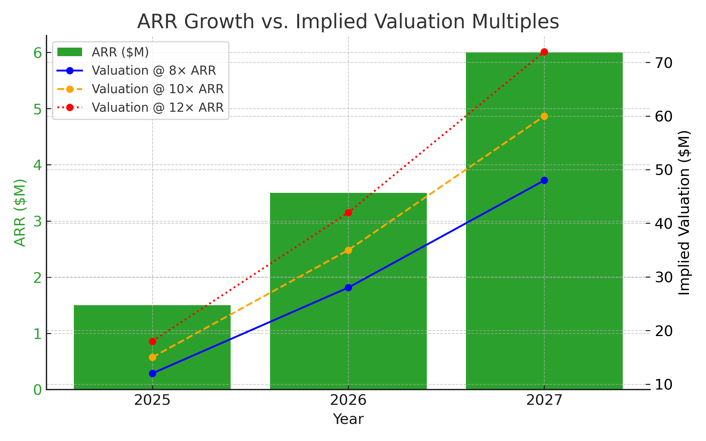

Quantum Yield Seed Funding Plan
Executive Summary
Quantum Yield delivers AI‑driven yield curve intelligence that turns forecasts into trades.
Our patent‑pending LASM framework (LSTM + Anchor + scenario guidance) combines deep learning with economic structure,
producing stable, interpretable signals across regimes — from daily horizons to sub‑second microstructure.
With Strategy Brewer, we connect AI forecasts to execution so institutions can act on insights immediately.
We commercialize via SaaS / PaaS / API for banks, asset managers, insurers, and trading desks.
Initial focus is U.S. fixed income (Treasuries, swaps, credit), followed by international expansion.
We are raising a $2.5M Seed via post‑money SAFE ($15M), prioritizing strategic and syndicate investors ($500K+).
Problem Statement
- Legacy models are rigid and constrained. Fixed functional forms work in calm markets but break under non‑linear shocks (inflation spikes, policy pivots).
- Pure AI can misfire without structure. LSTMs are powerful, but without macro anchoring they can overfit and miss regime shifts.
- Forecasts rarely turn into trades. Few platforms connect AI, technicals, and sentiment into a real‑time, actionable workflow.
Result: Fragmented workflows, low confidence, and missed alpha.
Our Solution
AI Yield Forecasting, Reinvented
- AI that learns and explains: LSTM + PCA delivers predictive power with interpretable yield‑curve components (level, slope, curvature).
- LASM (patent‑pending): Anchors neural forecasts to economic structure — enforcing shape integrity, directional discipline, and scenario awareness for real‑world credibility.
- Strategy Brewer: Turns forecasts into trades in one platform — blending AI with trusted technical tools for execution, hedging, and risk.
- Real‑time adaptability: Macro + microstructure inputs support sub‑second cadence and HFT‑compatible gating.
Market Opportunity
- $24T U.S. Treasury market; $100T+ global fixed‑income AUM.
- Competitor validation: Incumbents in fixed‑income analytics generate $10M–$2B annually — strong proof of demand.
- White‑space opportunity: Profitable niche players (e.g., AD&Co, Polypath, Kamakura at ~$10–25M) rely on older modeling; few link AI forecasts to execution.
- Scalable go‑to‑market: Start with boutique‑to‑mid‑tier institutions ($10–$100M revenue clients), then expand to large global institutions and international markets via SaaS/PaaS/API.
Intellectual Property Assignment
The Company affirms that all relevant intellectual property has been or will be assigned to Quantum Yield, Inc. This includes the following key assets:
- Yield Curve Forecasting Platform – proprietary AI and surrogate modeling frameworks used for macroeconomic forecasting. Available at https://ycf.quantumyield.ai
- Securitizer – the structured finance analytics platform designed for RMBS, CMBS, CLO, and ABS structuring and waterfall analysis. Accessible at https://securitizer.io
- Pending U.S. Patent – covering innovations in hybrid modeling techniques integrating AI anchoring, interpolation, and synthetic training. U.S. Patent Application No. 63/778,607
Financial Projections
Revenue Model: Annual subscriptions (SaaS/API), platform usage (PaaS), and enterprise integration services.
- Year 1: ~$1.0M total — $0.5M ARR (12–18 clients) + $0.5M integrations.
- Year 2: ~$3.5M total — $2.0M ARR (35–45 clients) + $1.5M integrations.
- Year 3: ~$9.0M total — $6.0M ARR (90–110 clients) + $3.0M integrations, with international expansion.
Trajectory reflects staged capture of a validated market: initial boutique/mid‑tier adoption, followed by expansion into larger institutional accounts and international financial centers.

Valuation Support (24–36 Months)
The projected ARR ramp ($0.5M → $2.0M → $6.0M) supports the seed round’s $15M post‑money valuation, assuming standard early B2B SaaS multiples.
- Multiples: 8×–12× ARR commonly observed at Series A/B for strong growth SaaS.
- Implied Valuation at Year 3: $48M–$72M on $6.0M ARR (even 8× yields ~$48M).
- Conclusion: 3×+ uplift from $15M post‑money is achievable in 24–36 months with execution.

Seed SAFE Terms
Issuer: Quantum Yield, Inc. (Delaware)
Instrument: Post‑Money SAFE
Round Size: $2,500,000 (Seed)
Valuation: $15,000,000 Post‑Money
Key Terms
- Ownership on Conversion: ~16.67% ($2.5M / $15M) in aggregate for this round at the next priced equity financing, subject to other SAFEs/notes and option pool adjustments.
- Investor Profile: Targeting strategic corporates and syndicate‑capable funds; minimum check $500K+.
- Pro Rata Rights: Standard seed pro‑rata to maintain ownership in the next round.
- MFN: Most Favored Nation provision available across SAFEs in this seed round, if applicable.
- Information Rights: Quarterly updates and unaudited financials; annual operating plan and KPIs.
- Use of Proceeds: Sales & GTM (35%), Technology Development (40%), O&M (20%), Legal/Admin & Contingency (5%).
- Closing Timeline: Rolling closes; target full close in 60–90 days.
- Conversion to Equity: Upon a qualified financing event (e.g., Series A), SAFE converts into preferred equity at the lower of a 20% discount to the next round price or the price implied by the $15M post-money valuation cap.
- Interest Rate: SAFE accrues no interest prior to conversion.
- Maturity Date: No set maturity date; SAFE remains outstanding until a conversion event or other trigger as defined in the SAFE terms.
Use of Proceeds
We intend to deploy the $2.5M Seed (SAFE, $15M post) as follows:
- Sales & Go‑to‑Market – 35%: Enterprise AE/SE hires, channel partners, marketing, events, and proof‑of‑concept support.
- Technology Development – 40%: Core LASM & PCA enhancements, Strategy Brewer features, HFT microstructure integration, security/compliance, and cloud infrastructure.
- Operations & Maintenance – 20%: Customer success, SRE/DevOps, model monitoring, SLAs, and support.
- Legal/Admin & Contingency – 5%: Legal, audit, and prudent reserves.
This allocation accelerates revenue by expanding enterprise pipeline and ensures the platform scales reliably for institutional adoption.
Signatures
Signature: _______________________________
Date: _______________________________
Investor:
Signature: _______________________________
Name: _______________________________
Date: _______________________________